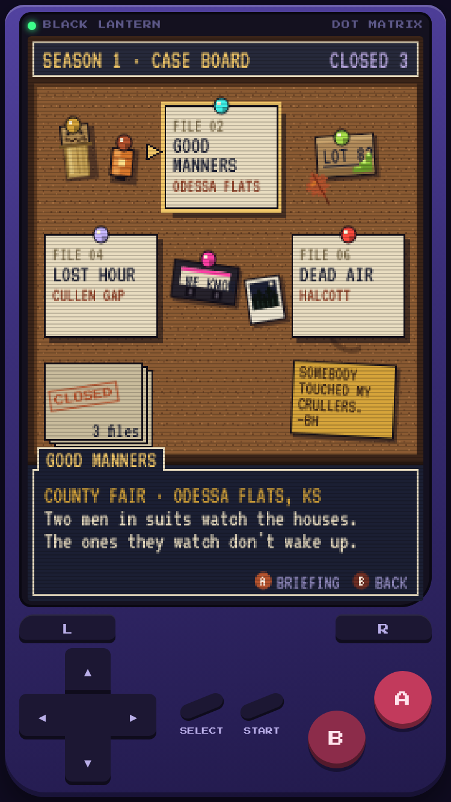
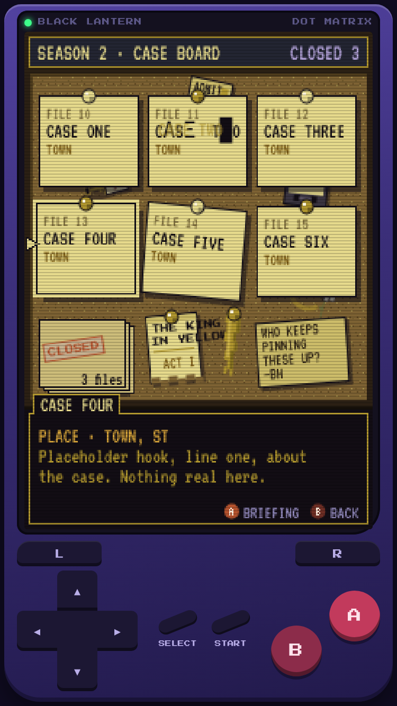

Look mockup for the seasonal case board. Drawn over the real game's board (today's build, in the real shell at 375 × 667) with the keepsakes added in code (024-seasonal-board-mockup.js). Motion can't show in a still: the notes say what moves.
Still Harvest, Lot 83 and Tracking are closed. Each left its keepsake where its card hung: a burlap doll with a stitched smile, the LOT 83 box flap with mold creeping, the WE KNOW tape. Beside each, a Season 1 piece: a paper lantern, autumn leaves, a polaroid of a treeline. Big Hat's note has changed. Moves: the leaves stir, the lantern glows softly.

Cards are placeholders. Brass pins, paper gone sallow, pallid trim. The closed cases' keepsakes (a room key, a cassette, a pressed flower) sit behind the new cards and peek out. Season pieces: a ticket stub, the torn playbill, a yellow tatter. Acting wrong: CASE FIVE hangs crooked, CASE TWO's title flickers to garble and back. Moves: the tatter stirs with no draft.
